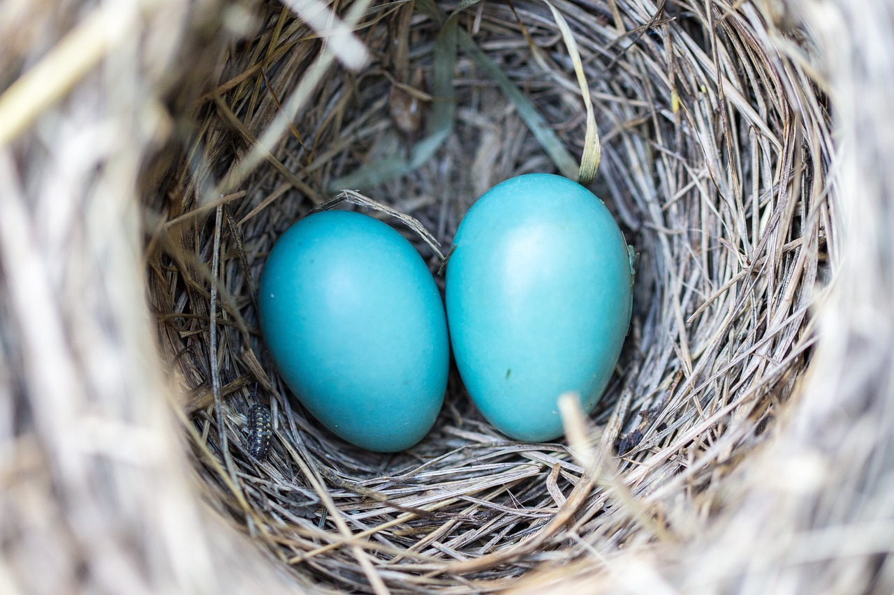

¿Qué fue antes, el huevo o la gallina? Este animal en apariencia tan simple, es en realidad inteligente, simpático y sensible. Hoy te sorprendemos con varias curiosidades sobre los pollos que seguramente desconoces.
| Raza | Color |
|---|---|
| Fenix | Rojo |
- Pollos Australiano
- Pollo volador
- Gallina voladora
- Pollo Canario
- Limpiar pollo
- Cortar Alas
- Marinar al gusto
- Poner 4 horas al horno
